O livro está sendo escrito
Os capítulos aparecem aqui assim que forem publicados.
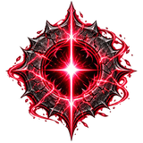
NOCTUm homem que perdeu sua razão para viver. Uma fenda carmesim que responde à ausência.
NOCT Crimson Rift é um metroidvania 2D em pixel art, feito na Godot. Você controla Noct, um viajante que aceita trabalhos, entra em ruínas por dinheiro e chama isso de liberdade. Na verdade, está fugindo.
Desde que perdeu Mira, uma energia carmesim responde a ele. Ele a odeia. E precisa dela. De Pedravelha até o fundo da Fenda, cada área guarda um chefe, uma lembrança e uma pergunta que ele evita fazer em voz alta.
 Noct
NoctE se ela morreu por minha causa?
Socos, chutes, cruzados e combos no chão e no ar. Dash, pulo duplo e golpe carregado para quem aprende o ritmo de cada inimigo.
A energia que vive em Noct não obedece a selos. Com ela, ele lança magias, cura feridas e, mais tarde, atravessa paredes carmesim.
Quando o poder deixa de ser surto e vira escolha, Noct assume a forma da raposa carmesim, com garras, investidas e a Raposa Espectral.
Fragmentos dela estão espalhados pelo mundo. Cada um devolve a Noct um pedaço do que ele tentou esquecer.
Um refúgio e cinco regiões, cada uma com cenários no estilo do seu chefe e terminando na sala dele.
No fim da estrada, Noct precisa decidir o que fazer com a porta que ela fechou.
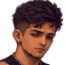
Noct
O viajante
Aceita trabalhos, entra em ruínas por dinheiro e chama isso de liberdade. Responde quase tudo com sarcasmo, e o sarcasmo é a armadura que sobrou.
Carrega no pulso uma fita carmesim e não diz de onde ela veio. Quando mente, coça a sobrancelha. Diante de inimigos enormes, sorri de canto.
Mira o chamava de idiota com carinho. Ele a chamava de raposinha. No banco da estação, ela sentava à esquerda e ele à direita. Hoje o lado esquerdo fica vazio.
O mundo se divide em seis áreas. Pedravelha é o refúgio; as outras cinco terminam na sala de um chefe.
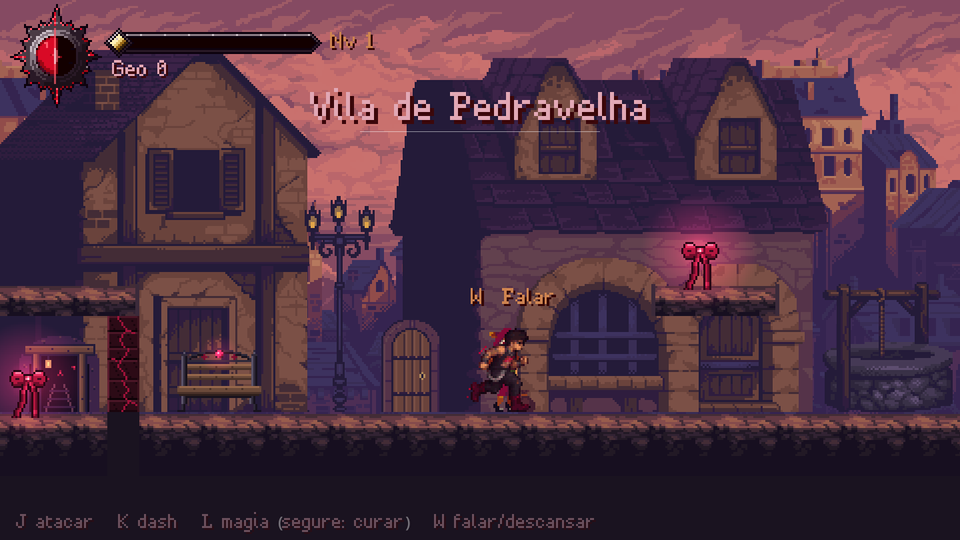
Refúgio, sem chefe
Duas saídas, uma torre e gente demais olhando pela janela. Aqui ficam o banco, a loja do Brom e a Irmã Lívia. Embaixo da vila, um poço desce mais do que deveria.
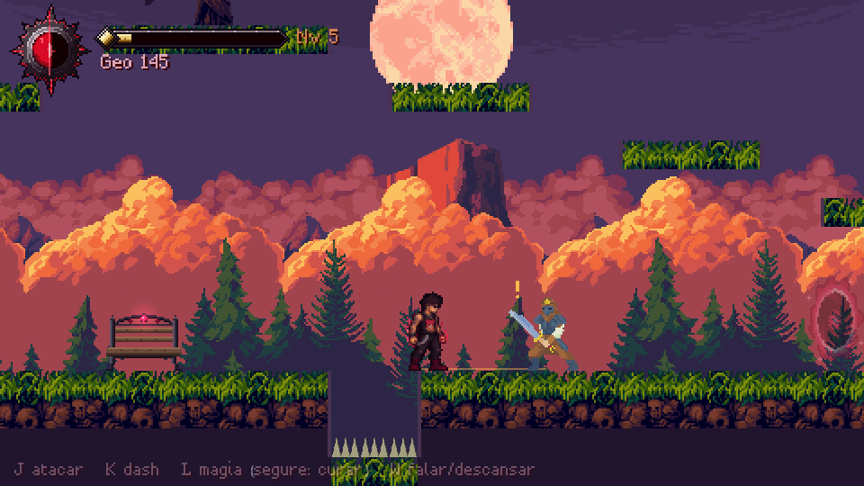
Chefe: Capitão dos Saqueadores
O Bosque e a Serra, tomados por um bando que rouba carroças e leva gente. Um vigia guarda uma das trilhas há tanto tempo que esqueceu para quem.
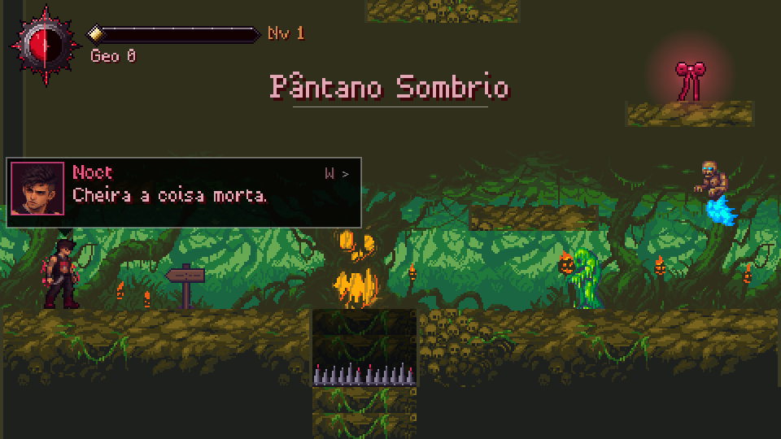
Chefe: Gato Infernal
O pântano a leste que engoliu muitos viajantes, o cemitério e, além dele, a toca de uma fera que as pessoas só mencionam baixinho.
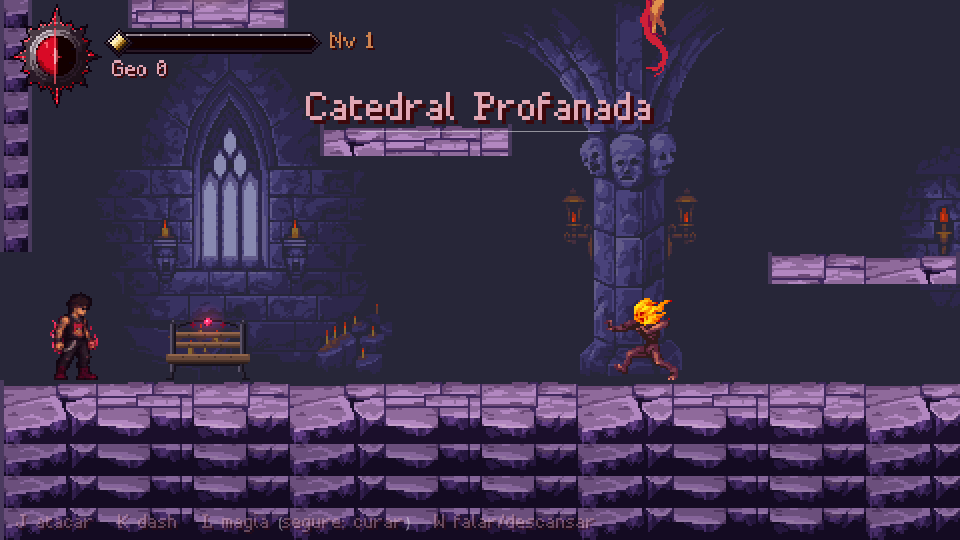
Chefe: Bringer of Death
A Catedral Profanada, as ruínas arcanas e um arquivo submerso onde alguém registrava as almas presas no selo.
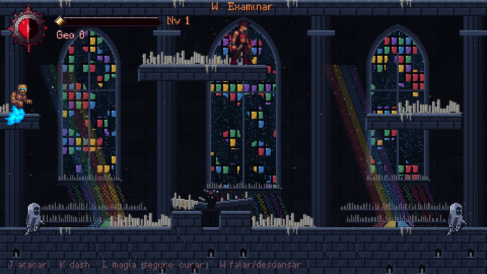
Chefe: Velário, o Carcereiro
A margem do lago, a Capela da Vigília, o Penhasco da Chuva Eterna e o Lago Velado, onde fica guardado o que Noct escolheu esquecer.
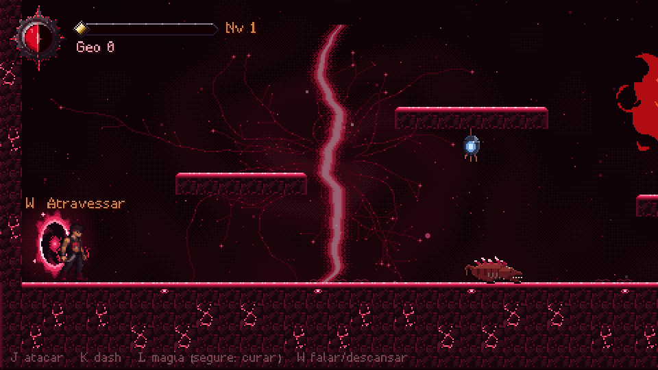
Chefe: Demon Slime
As Minas da Fenda, onde o veio cantava quando alguém na vila chorava. Depois, o Coração da Fenda, o Inferno e o Trono do Demônio.
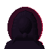
Mira
A dona da fita
A única pessoa que atravessou as defesas de Noct. Ria do sarcasmo dele em vez de se assustar.
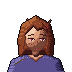
Tessa
Também ouve a fenda
Diz que parece alguém chamando do outro lado de uma porta.
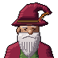
Velho Zeno
Morador de Pedravelha
O primeiro a receber Noct na vila. Avisa que o pântano a leste engoliu muitos viajantes.
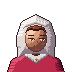
Irmã Lívia
Religiosa de Pedravelha
Perguntou da fita no pulso dele. "É só uma fita." Os dois sabem que é mentira.
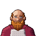
Ferreiro Brom
Ferreiro de Pedravelha
Quem vai enfrentar o que vive além do cemitério passa por ele antes.
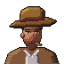
Forasteiro
Viajante de chapéu
"E o resto?" "O resto ocupa a cabeça."
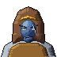
Capitão
Líder dos saqueadores
Perguntou se Noct ia bancar o herói. "Não. Só não gosto de você."
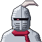
Vigia Errante
Guardião da trilha
Guardou uma trilha do Bosque por tanto tempo que esqueceu para quem.
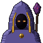
Custódio
Mago da Ruína
"Então pertence ao selo." "Não pertenço a nada."
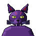
Gato Infernal
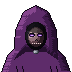
Bringer of Death
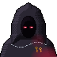
Velário
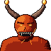
Demon Slime
O livro
A história de Noct contada como um livro.
O livro está sendo escrito
Os capítulos aparecem aqui assim que forem publicados.